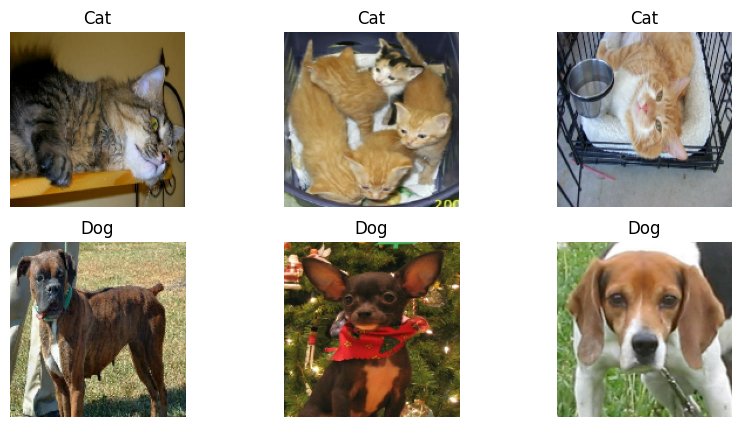
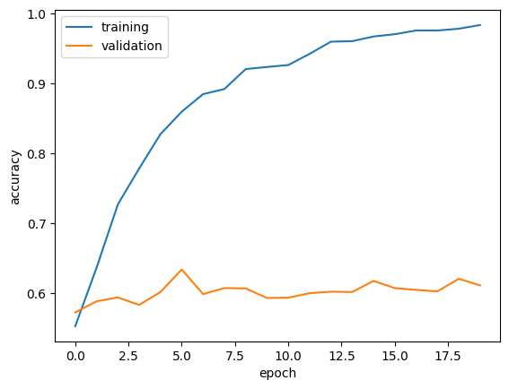

import os
from keras import utils
import tensorflow_datasets as tfdstrain_ds, validation_ds, test_ds = tfds.load(
"cats_vs_dogs",
# 40% for training, 10% for validation, and 10% for test (the rest unused)
split=["train[:40%]", "train[40%:50%]", "train[50%:60%]"],
as_supervised=True, # Include labels
)
print(f"Number of training samples: {train_ds.cardinality()}")
print(f"Number of validation samples: {validation_ds.cardinality()}")
print(f"Number of test samples: {test_ds.cardinality()}")Downloading and preparing dataset 786.67 MiB (download: 786.67 MiB, generated: 1.04 GiB, total: 1.81 GiB) to /root/tensorflow_datasets/cats_vs_dogs/4.0.1...
Dataset cats_vs_dogs downloaded and prepared to /root/tensorflow_datasets/cats_vs_dogs/4.0.1. Subsequent calls will reuse this data.
Number of training samples: 9305
Number of validation samples: 2326
Number of test samples: 2326WARNING:absl:1738 images were corrupted and were skippedimport kerasresize_fn = keras.layers.Resizing(150, 150)
train_ds = train_ds.map(lambda x, y: (resize_fn(x), y))
validation_ds = validation_ds.map(lambda x, y: (resize_fn(x), y))
test_ds = test_ds.map(lambda x, y: (resize_fn(x), y))from tensorflow import data as tf_data
batch_size = 64
train_ds = train_ds.batch(batch_size).prefetch(tf_data.AUTOTUNE).cache()
validation_ds = validation_ds.batch(batch_size).prefetch(tf_data.AUTOTUNE).cache()
test_ds = test_ds.batch(batch_size).prefetch(tf_data.AUTOTUNE).cache()import matplotlib.pyplot as plt
def visualization(train_ds):
plt.figure(figsize=(10, 5))
cat_images = []
dog_images = []
# Get first three images of cats and dogs
for images, labels in train_ds.unbatch().as_numpy_iterator():
if labels == 0 and len(cat_images) < 3:
cat_images.append(images)
elif labels == 1 and len(dog_images) < 3:
dog_images.append(images)
for i in range(3): # First three cats
plt.subplot(2, 3, i + 1)
plt.imshow(cat_images[i].astype("uint8"))
plt.axis("off")
plt.title("Cat")
for i in range(3): # First three dogs
plt.subplot(2, 3, i + 4) # Dogs start from the 4th position
plt.imshow(dog_images[i].astype("uint8"))
plt.axis("off")
plt.title("Dog")
plt.show()
visualization(train_ds)
labels_iterator= train_ds.unbatch().map(lambda image, label: label).as_numpy_iterator()cat_count = 0
dog_count = 0
# Iterate in the dataset and count cats and dogs
for label in labels_iterator:
if label == 0:
cat_count += 1
elif label == 1:
dog_count += 1
print(f"Number of cat images: {cat_count}")
print(f"Number of dog images: {dog_count}")
# Calculate the baseline model accuracy
total_images = cat_count + dog_count
most_frequent_label_count = max(cat_count, dog_count)
baseline_accuracy = most_frequent_label_count / total_images
print(f"Baseline model accuracy: {baseline_accuracy:.2f}")Number of cat images: 4637
Number of dog images: 4668
Baseline model accuracy: 0.50from keras import datasets, layers, models
model1 = models.Sequential([
layers.Input((150, 150, 3)),
# First Convolutional Block
layers.Conv2D(32, (3, 3), activation='relu'),
layers.MaxPooling2D((2, 2)),
# Second Convolutional Block
layers.Conv2D(64, (3, 3), activation='relu'),
layers.MaxPooling2D((2, 2)),
layers.Flatten(),
layers.Dense(64, activation='relu'),
layers.Dropout(0.2),
layers.Dense(1, activation='sigmoid') # for binary classification
])
# Compile the model
model1.compile(optimizer='adam',
loss='binary_crossentropy', # for binary classification
metrics=['accuracy'])
model1.summary()
# Train the model
history = model1.fit(train_ds,
epochs=20,
validation_data=validation_ds)
# Plot the training and validation accuracy
import matplotlib.pyplot as plt
plt.plot(history.history["accuracy"], label = "training")
plt.plot(history.history["val_accuracy"], label = "validation")
plt.gca().set(xlabel = "epoch", ylabel = "accuracy")
plt.legend()Model: "sequential"
_________________________________________________________________
Layer (type) Output Shape Param #
=================================================================
conv2d (Conv2D) (None, 148, 148, 32) 896
max_pooling2d (MaxPooling2 (None, 74, 74, 32) 0
D)
conv2d_1 (Conv2D) (None, 72, 72, 64) 18496
max_pooling2d_1 (MaxPoolin (None, 36, 36, 64) 0
g2D)
flatten (Flatten) (None, 82944) 0
dense (Dense) (None, 64) 5308480
dropout (Dropout) (None, 64) 0
dense_1 (Dense) (None, 1) 65
=================================================================
Total params: 5327937 (20.32 MB)
Trainable params: 5327937 (20.32 MB)
Non-trainable params: 0 (0.00 Byte)
_________________________________________________________________
Epoch 1/20
146/146 [==============================] - 18s 70ms/step - loss: 28.7778 - accuracy: 0.5525 - val_loss: 0.6760 - val_accuracy: 0.5722
Epoch 2/20
146/146 [==============================] - 5s 32ms/step - loss: 0.6321 - accuracy: 0.6361 - val_loss: 0.6730 - val_accuracy: 0.5881
Epoch 3/20
146/146 [==============================] - 5s 34ms/step - loss: 0.5104 - accuracy: 0.7269 - val_loss: 0.7193 - val_accuracy: 0.5937
Epoch 4/20
146/146 [==============================] - 5s 32ms/step - loss: 0.4314 - accuracy: 0.7783 - val_loss: 0.8652 - val_accuracy: 0.5830
Epoch 5/20
146/146 [==============================] - 5s 32ms/step - loss: 0.3516 - accuracy: 0.8275 - val_loss: 1.0036 - val_accuracy: 0.6015
Epoch 6/20
146/146 [==============================] - 5s 33ms/step - loss: 0.2980 - accuracy: 0.8598 - val_loss: 1.1715 - val_accuracy: 0.6337
Epoch 7/20
146/146 [==============================] - 5s 32ms/step - loss: 0.2789 - accuracy: 0.8848 - val_loss: 1.5469 - val_accuracy: 0.5985
Epoch 8/20
146/146 [==============================] - 5s 32ms/step - loss: 0.2414 - accuracy: 0.8921 - val_loss: 1.3987 - val_accuracy: 0.6071
Epoch 9/20
146/146 [==============================] - 5s 32ms/step - loss: 0.1998 - accuracy: 0.9207 - val_loss: 1.3468 - val_accuracy: 0.6066
Epoch 10/20
146/146 [==============================] - 5s 32ms/step - loss: 0.2025 - accuracy: 0.9237 - val_loss: 1.5451 - val_accuracy: 0.5929
Epoch 11/20
146/146 [==============================] - 5s 33ms/step - loss: 0.1972 - accuracy: 0.9265 - val_loss: 1.7485 - val_accuracy: 0.5933
Epoch 12/20
146/146 [==============================] - 5s 32ms/step - loss: 0.1592 - accuracy: 0.9425 - val_loss: 2.0177 - val_accuracy: 0.5997
Epoch 13/20
146/146 [==============================] - 5s 32ms/step - loss: 0.1185 - accuracy: 0.9599 - val_loss: 1.9909 - val_accuracy: 0.6019
Epoch 14/20
146/146 [==============================] - 5s 32ms/step - loss: 0.1056 - accuracy: 0.9607 - val_loss: 1.9737 - val_accuracy: 0.6015
Epoch 15/20
146/146 [==============================] - 5s 32ms/step - loss: 0.0907 - accuracy: 0.9673 - val_loss: 2.3578 - val_accuracy: 0.6174
Epoch 16/20
146/146 [==============================] - 5s 32ms/step - loss: 0.0813 - accuracy: 0.9707 - val_loss: 2.7964 - val_accuracy: 0.6071
Epoch 17/20
146/146 [==============================] - 5s 32ms/step - loss: 0.0795 - accuracy: 0.9759 - val_loss: 2.4799 - val_accuracy: 0.6045
Epoch 18/20
146/146 [==============================] - 5s 32ms/step - loss: 0.0685 - accuracy: 0.9759 - val_loss: 2.7452 - val_accuracy: 0.6023
Epoch 19/20
146/146 [==============================] - 5s 33ms/step - loss: 0.0693 - accuracy: 0.9785 - val_loss: 2.4840 - val_accuracy: 0.6204
Epoch 20/20
146/146 [==============================] - 5s 32ms/step - loss: 0.0517 - accuracy: 0.9838 - val_loss: 2.7648 - val_accuracy: 0.6109
for images, _ in train_ds.take(1):
original_image = images[50]
plt.figure(figsize=(12, 12))
# Original image
plt.subplot(4, 4, 1)
plt.imshow(original_image.numpy().astype("uint8"))
plt.title("Original")
plt.axis("off")
# Random Flip
flip = layers.RandomFlip("horizontal_and_vertical")
for i in range(2, 9):
plt.subplot(4, 4, i)
flip_image = flip(original_image, training=True)
plt.imshow(flip_image.numpy().astype("uint8"))
plt.title("Flip")
plt.axis("off")
# Random Rotation
rotation = layers.RandomRotation(0.2)
for i in range(9, 17):
plt.subplot(4, 4, i)
rotate_image = rotation(original_image, training=True)
plt.imshow(rotate_image.numpy().astype("uint8"))
plt.title("Rotation")
plt.axis("off")
plt.show()
from tensorflow.keras import layers, models, optimizers, losses
model2 = models.Sequential([
layers.Input((150, 150, 3)),
#RandomFlip() layer and a RandomRotation() layer
layers.RandomFlip("horizontal_and_vertical"),
layers.RandomRotation(0.2),
layers.Conv2D(32, (3, 3), activation='relu'),
layers.MaxPooling2D((2, 2)),
layers.Conv2D(64, (3, 3), activation='relu'),
layers.MaxPooling2D((2, 2)),
layers.Flatten(),
layers.Dense(64, activation='relu'),
layers.Dropout(0.2),
layers.Dense(1, activation='sigmoid')
])
model2.compile(optimizer = 'adam',
loss=losses.BinaryCrossentropy(from_logits=False),
metrics = ['accuracy'])
model2.summary()
history = model2.fit(train_ds,
epochs=20,
validation_data=validation_ds)
plt.plot(history.history["accuracy"], label = "training")
plt.plot(history.history["val_accuracy"], label = "validation")
plt.gca().set(xlabel = "epoch", ylabel = "accuracy")
plt.legend()Model: "sequential_1"
_________________________________________________________________
Layer (type) Output Shape Param #
=================================================================
random_flip_1 (RandomFlip) (None, 150, 150, 3) 0
random_rotation_1 (RandomR (None, 150, 150, 3) 0
otation)
conv2d_2 (Conv2D) (None, 148, 148, 32) 896
max_pooling2d_2 (MaxPoolin (None, 74, 74, 32) 0
g2D)
conv2d_3 (Conv2D) (None, 72, 72, 64) 18496
max_pooling2d_3 (MaxPoolin (None, 36, 36, 64) 0
g2D)
flatten_1 (Flatten) (None, 82944) 0
dense_2 (Dense) (None, 64) 5308480
dropout_1 (Dropout) (None, 64) 0
dense_3 (Dense) (None, 1) 65
=================================================================
Total params: 5327937 (20.32 MB)
Trainable params: 5327937 (20.32 MB)
Non-trainable params: 0 (0.00 Byte)
_________________________________________________________________
Epoch 1/20
146/146 [==============================] - 8s 38ms/step - loss: 31.7002 - accuracy: 0.5430 - val_loss: 0.6609 - val_accuracy: 0.5791
Epoch 2/20
146/146 [==============================] - 5s 36ms/step - loss: 0.6764 - accuracy: 0.5846 - val_loss: 0.6701 - val_accuracy: 0.5804
Epoch 3/20
146/146 [==============================] - 5s 35ms/step - loss: 0.6670 - accuracy: 0.5731 - val_loss: 0.6599 - val_accuracy: 0.6187
Epoch 4/20
146/146 [==============================] - 5s 36ms/step - loss: 0.6628 - accuracy: 0.5884 - val_loss: 0.6694 - val_accuracy: 0.5873
Epoch 5/20
146/146 [==============================] - 5s 35ms/step - loss: 0.6718 - accuracy: 0.5790 - val_loss: 0.6574 - val_accuracy: 0.6096
Epoch 6/20
146/146 [==============================] - 5s 37ms/step - loss: 0.6585 - accuracy: 0.6124 - val_loss: 0.6539 - val_accuracy: 0.5993
Epoch 7/20
146/146 [==============================] - 5s 35ms/step - loss: 0.6421 - accuracy: 0.6343 - val_loss: 0.6362 - val_accuracy: 0.6285
Epoch 8/20
146/146 [==============================] - 5s 36ms/step - loss: 0.6518 - accuracy: 0.6232 - val_loss: 0.6345 - val_accuracy: 0.6341
Epoch 9/20
146/146 [==============================] - 5s 35ms/step - loss: 0.6433 - accuracy: 0.6336 - val_loss: 0.6198 - val_accuracy: 0.6531
Epoch 10/20
146/146 [==============================] - 5s 36ms/step - loss: 0.6276 - accuracy: 0.6469 - val_loss: 0.6193 - val_accuracy: 0.6617
Epoch 11/20
146/146 [==============================] - 5s 35ms/step - loss: 0.6197 - accuracy: 0.6502 - val_loss: 0.6208 - val_accuracy: 0.6531
Epoch 12/20
146/146 [==============================] - 5s 37ms/step - loss: 0.6136 - accuracy: 0.6636 - val_loss: 0.6074 - val_accuracy: 0.6763
Epoch 13/20
146/146 [==============================] - 5s 35ms/step - loss: 0.6080 - accuracy: 0.6663 - val_loss: 0.6145 - val_accuracy: 0.6578
Epoch 14/20
146/146 [==============================] - 5s 36ms/step - loss: 0.6126 - accuracy: 0.6620 - val_loss: 0.5976 - val_accuracy: 0.6776
Epoch 15/20
146/146 [==============================] - 5s 35ms/step - loss: 0.6103 - accuracy: 0.6660 - val_loss: 0.6001 - val_accuracy: 0.6745
Epoch 16/20
146/146 [==============================] - 5s 36ms/step - loss: 0.6027 - accuracy: 0.6742 - val_loss: 0.5892 - val_accuracy: 0.6844
Epoch 17/20
146/146 [==============================] - 5s 35ms/step - loss: 0.6093 - accuracy: 0.6686 - val_loss: 0.6065 - val_accuracy: 0.6763
Epoch 18/20
146/146 [==============================] - 5s 35ms/step - loss: 0.6100 - accuracy: 0.6689 - val_loss: 0.5978 - val_accuracy: 0.6849
Epoch 19/20
146/146 [==============================] - 5s 35ms/step - loss: 0.6030 - accuracy: 0.6685 - val_loss: 0.5957 - val_accuracy: 0.6853
Epoch 20/20
146/146 [==============================] - 5s 36ms/step - loss: 0.6074 - accuracy: 0.6710 - val_loss: 0.5892 - val_accuracy: 0.6939
i = keras.Input(shape=(150, 150, 3))
# The pixel values have the range of (0, 255), but many models will work better if rescaled to (-1, 1.)
# outputs: `(inputs * scale) + offset`
scale_layer = keras.layers.Rescaling(scale=1 / 127.5, offset=-1)
x = scale_layer(i)
preprocessor = keras.Model(inputs = i, outputs = x)
model3 = models.Sequential([
preprocessor,
layers.RandomFlip("horizontal_and_vertical"),
layers.RandomRotation(0.2),
# First Convolutional Block
layers.Conv2D(32, (3, 3), activation='relu'),
layers.MaxPooling2D((2, 2)),
# Second Convolutional Block
layers.Conv2D(64, (3, 3), activation='relu'),
layers.MaxPooling2D((2, 2)),
# Adding additional Convolutional Block to enhance the model
layers.Conv2D(128, (3, 3), activation='relu'),
layers.MaxPooling2D((2, 2)),
layers.Flatten(),
layers.Dense(128, activation='relu'),
# Additional Dense layer for complexity
layers.Dense(64, activation='relu'),
layers.Dropout(0.2),
layers.Dense(1, activation='sigmoid')
])
model3.compile(optimizer = 'adam',
loss=losses.BinaryCrossentropy(from_logits=False),
metrics = ['accuracy'])
model3.summary()
history = model3.fit(train_ds,
epochs=20,
validation_data=validation_ds)
plt.plot(history.history["accuracy"], label = "training")
plt.plot(history.history["val_accuracy"], label = "validation")
plt.gca().set(xlabel = "epoch", ylabel = "accuracy")
plt.legend()Model: "sequential_2"
_________________________________________________________________
Layer (type) Output Shape Param #
=================================================================
model (Functional) (None, 150, 150, 3) 0
random_flip_2 (RandomFlip) (None, 150, 150, 3) 0
random_rotation_2 (RandomR (None, 150, 150, 3) 0
otation)
conv2d_4 (Conv2D) (None, 148, 148, 32) 896
max_pooling2d_4 (MaxPoolin (None, 74, 74, 32) 0
g2D)
conv2d_5 (Conv2D) (None, 72, 72, 64) 18496
max_pooling2d_5 (MaxPoolin (None, 36, 36, 64) 0
g2D)
conv2d_6 (Conv2D) (None, 34, 34, 128) 73856
max_pooling2d_6 (MaxPoolin (None, 17, 17, 128) 0
g2D)
flatten_2 (Flatten) (None, 36992) 0
dense_4 (Dense) (None, 128) 4735104
dense_5 (Dense) (None, 64) 8256
dropout_2 (Dropout) (None, 64) 0
dense_6 (Dense) (None, 1) 65
=================================================================
Total params: 4836673 (18.45 MB)
Trainable params: 4836673 (18.45 MB)
Non-trainable params: 0 (0.00 Byte)
_________________________________________________________________
Epoch 1/20
146/146 [==============================] - 10s 47ms/step - loss: 0.6571 - accuracy: 0.6048 - val_loss: 0.5811 - val_accuracy: 0.6943
Epoch 2/20
146/146 [==============================] - 6s 44ms/step - loss: 0.5950 - accuracy: 0.6846 - val_loss: 0.5476 - val_accuracy: 0.7206
Epoch 3/20
146/146 [==============================] - 6s 43ms/step - loss: 0.5700 - accuracy: 0.7020 - val_loss: 0.5358 - val_accuracy: 0.7326
Epoch 4/20
146/146 [==============================] - 6s 44ms/step - loss: 0.5577 - accuracy: 0.7130 - val_loss: 0.5183 - val_accuracy: 0.7365
Epoch 5/20
146/146 [==============================] - 6s 43ms/step - loss: 0.5440 - accuracy: 0.7236 - val_loss: 0.5162 - val_accuracy: 0.7412
Epoch 6/20
146/146 [==============================] - 6s 44ms/step - loss: 0.5261 - accuracy: 0.7342 - val_loss: 0.5177 - val_accuracy: 0.7412
Epoch 7/20
146/146 [==============================] - 6s 43ms/step - loss: 0.5160 - accuracy: 0.7422 - val_loss: 0.5068 - val_accuracy: 0.7549
Epoch 8/20
146/146 [==============================] - 6s 44ms/step - loss: 0.5051 - accuracy: 0.7509 - val_loss: 0.4928 - val_accuracy: 0.7683
Epoch 9/20
146/146 [==============================] - 6s 43ms/step - loss: 0.4862 - accuracy: 0.7656 - val_loss: 0.4933 - val_accuracy: 0.7678
Epoch 10/20
146/146 [==============================] - 6s 44ms/step - loss: 0.4811 - accuracy: 0.7673 - val_loss: 0.4745 - val_accuracy: 0.7794
Epoch 11/20
146/146 [==============================] - 6s 44ms/step - loss: 0.4702 - accuracy: 0.7760 - val_loss: 0.4845 - val_accuracy: 0.7687
Epoch 12/20
146/146 [==============================] - 6s 43ms/step - loss: 0.4578 - accuracy: 0.7802 - val_loss: 0.4796 - val_accuracy: 0.7721
Epoch 13/20
146/146 [==============================] - 6s 44ms/step - loss: 0.4536 - accuracy: 0.7866 - val_loss: 0.4598 - val_accuracy: 0.7923
Epoch 14/20
146/146 [==============================] - 6s 43ms/step - loss: 0.4391 - accuracy: 0.7959 - val_loss: 0.4418 - val_accuracy: 0.7945
Epoch 15/20
146/146 [==============================] - 6s 44ms/step - loss: 0.4298 - accuracy: 0.7999 - val_loss: 0.4554 - val_accuracy: 0.8005
Epoch 16/20
146/146 [==============================] - 6s 43ms/step - loss: 0.4163 - accuracy: 0.8089 - val_loss: 0.4331 - val_accuracy: 0.8035
Epoch 17/20
146/146 [==============================] - 6s 44ms/step - loss: 0.4111 - accuracy: 0.8113 - val_loss: 0.4206 - val_accuracy: 0.8044
Epoch 18/20
146/146 [==============================] - 6s 43ms/step - loss: 0.4110 - accuracy: 0.8119 - val_loss: 0.4224 - val_accuracy: 0.8156
Epoch 19/20
146/146 [==============================] - 6s 44ms/step - loss: 0.3887 - accuracy: 0.8219 - val_loss: 0.4275 - val_accuracy: 0.8190
Epoch 20/20
146/146 [==============================] - 6s 44ms/step - loss: 0.3814 - accuracy: 0.8250 - val_loss: 0.4193 - val_accuracy: 0.8237
IMG_SHAPE = (150, 150, 3)
base_model = keras.applications.MobileNetV3Large(input_shape=IMG_SHAPE,
include_top=False,
weights='imagenet')
base_model.trainable = False
i = keras.Input(shape=IMG_SHAPE)
x = base_model(i, training = False)
base_model_layer = keras.Model(inputs = i, outputs = x)
model4 = models.Sequential([
base_model_layer,
layers.RandomFlip("horizontal_and_vertical"),
layers.RandomRotation(0.2),
# Pooling layer to reduce dimensionality
layers.GlobalMaxPooling2D(),
layers.Dropout(0.2),
layers.Dense(16, activation='relu'),
layers.Dense(2, activation='softmax')
])
model4.compile(optimizer='adam',
loss=losses.SparseCategoricalCrossentropy(),
metrics=['accuracy'])
model4.summary()
history = model4.fit(train_ds,
epochs=20,
validation_data=validation_ds)
plt.plot(history.history["accuracy"], label = "training")
plt.plot(history.history["val_accuracy"], label = "validation")
plt.gca().set(xlabel = "epoch", ylabel = "accuracy")
plt.legend()WARNING:tensorflow:`input_shape` is undefined or non-square, or `rows` is not 224. Weights for input shape (224, 224) will be loaded as the default.Downloading data from https://storage.googleapis.com/tensorflow/keras-applications/mobilenet_v3/weights_mobilenet_v3_large_224_1.0_float_no_top_v2.h5
12683000/12683000 [==============================] - 1s 0us/step
Model: "sequential_3"
_________________________________________________________________
Layer (type) Output Shape Param #
=================================================================
model_1 (Functional) (None, 5, 5, 960) 2996352
random_flip_3 (RandomFlip) (None, 5, 5, 960) 0
random_rotation_3 (RandomR (None, 5, 5, 960) 0
otation)
global_max_pooling2d (Glob (None, 960) 0
alMaxPooling2D)
dropout_3 (Dropout) (None, 960) 0
dense_7 (Dense) (None, 16) 15376
dense_8 (Dense) (None, 2) 34
=================================================================
Total params: 3011762 (11.49 MB)
Trainable params: 15410 (60.20 KB)
Non-trainable params: 2996352 (11.43 MB)
_________________________________________________________________
Epoch 1/20
146/146 [==============================] - 16s 64ms/step - loss: 0.2915 - accuracy: 0.9270 - val_loss: 0.0856 - val_accuracy: 0.9669
Epoch 2/20
146/146 [==============================] - 7s 45ms/step - loss: 0.0885 - accuracy: 0.9666 - val_loss: 0.0703 - val_accuracy: 0.9712
Epoch 3/20
146/146 [==============================] - 7s 46ms/step - loss: 0.0738 - accuracy: 0.9723 - val_loss: 0.0666 - val_accuracy: 0.9755
Epoch 4/20
146/146 [==============================] - 6s 44ms/step - loss: 0.0691 - accuracy: 0.9737 - val_loss: 0.0716 - val_accuracy: 0.9746
Epoch 5/20
146/146 [==============================] - 7s 45ms/step - loss: 0.0646 - accuracy: 0.9756 - val_loss: 0.0691 - val_accuracy: 0.9746
Epoch 6/20
146/146 [==============================] - 6s 44ms/step - loss: 0.0570 - accuracy: 0.9786 - val_loss: 0.0682 - val_accuracy: 0.9781
Epoch 7/20
146/146 [==============================] - 7s 45ms/step - loss: 0.0543 - accuracy: 0.9782 - val_loss: 0.0735 - val_accuracy: 0.9764
Epoch 8/20
146/146 [==============================] - 6s 43ms/step - loss: 0.0544 - accuracy: 0.9776 - val_loss: 0.0759 - val_accuracy: 0.9755
Epoch 9/20
146/146 [==============================] - 7s 45ms/step - loss: 0.0506 - accuracy: 0.9815 - val_loss: 0.0762 - val_accuracy: 0.9755
Epoch 10/20
146/146 [==============================] - 6s 44ms/step - loss: 0.0467 - accuracy: 0.9815 - val_loss: 0.0759 - val_accuracy: 0.9742
Epoch 11/20
146/146 [==============================] - 7s 45ms/step - loss: 0.0480 - accuracy: 0.9813 - val_loss: 0.0778 - val_accuracy: 0.9746
Epoch 12/20
146/146 [==============================] - 7s 45ms/step - loss: 0.0459 - accuracy: 0.9826 - val_loss: 0.0797 - val_accuracy: 0.9746
Epoch 13/20
146/146 [==============================] - 7s 45ms/step - loss: 0.0393 - accuracy: 0.9844 - val_loss: 0.0779 - val_accuracy: 0.9768
Epoch 14/20
146/146 [==============================] - 6s 44ms/step - loss: 0.0492 - accuracy: 0.9814 - val_loss: 0.0910 - val_accuracy: 0.9699
Epoch 15/20
146/146 [==============================] - 7s 45ms/step - loss: 0.0442 - accuracy: 0.9842 - val_loss: 0.0832 - val_accuracy: 0.9776
Epoch 16/20
146/146 [==============================] - 6s 44ms/step - loss: 0.0413 - accuracy: 0.9830 - val_loss: 0.0801 - val_accuracy: 0.9759
Epoch 17/20
146/146 [==============================] - 7s 45ms/step - loss: 0.0390 - accuracy: 0.9834 - val_loss: 0.0892 - val_accuracy: 0.9742
Epoch 18/20
146/146 [==============================] - 6s 44ms/step - loss: 0.0359 - accuracy: 0.9855 - val_loss: 0.0973 - val_accuracy: 0.9716
Epoch 19/20
146/146 [==============================] - 7s 45ms/step - loss: 0.0392 - accuracy: 0.9844 - val_loss: 0.0858 - val_accuracy: 0.9725
Epoch 20/20
146/146 [==============================] - 7s 45ms/step - loss: 0.0338 - accuracy: 0.9867 - val_loss: 0.0888 - val_accuracy: 0.9712
model5 = models.Sequential([
base_model_layer,
layers.RandomFlip("horizontal_and_vertical"),
layers.RandomRotation(0.2),
# Pooling layer to reduce dimensionality
layers.GlobalMaxPooling2D(),
layers.Dropout(0.5), # Changed to 0.5
layers.Dense(64, activation='relu'), # Changed to 64
layers.Dense(2, activation='softmax')
])
model5.compile(optimizer='adam',
loss=losses.SparseCategoricalCrossentropy(),
metrics=['accuracy'])
model5.summary()
history = model5.fit(train_ds,
epochs=20,
validation_data=validation_ds)
plt.plot(history.history["accuracy"], label = "training")
plt.plot(history.history["val_accuracy"], label = "validation")
plt.gca().set(xlabel = "epoch", ylabel = "accuracy")
plt.legend()Model: "sequential_4"
_________________________________________________________________
Layer (type) Output Shape Param #
=================================================================
model_1 (Functional) (None, 5, 5, 960) 2996352
random_flip_4 (RandomFlip) (None, 5, 5, 960) 0
random_rotation_4 (RandomR (None, 5, 5, 960) 0
otation)
global_max_pooling2d_1 (Gl (None, 960) 0
obalMaxPooling2D)
dropout_4 (Dropout) (None, 960) 0
dense_9 (Dense) (None, 64) 61504
dense_10 (Dense) (None, 2) 130
=================================================================
Total params: 3057986 (11.67 MB)
Trainable params: 61634 (240.76 KB)
Non-trainable params: 2996352 (11.43 MB)
_________________________________________________________________
Epoch 1/20
146/146 [==============================] - 13s 54ms/step - loss: 0.7425 - accuracy: 0.9170 - val_loss: 0.1128 - val_accuracy: 0.9643
Epoch 2/20
146/146 [==============================] - 7s 45ms/step - loss: 0.1864 - accuracy: 0.9490 - val_loss: 0.0897 - val_accuracy: 0.9682
Epoch 3/20
146/146 [==============================] - 6s 44ms/step - loss: 0.1393 - accuracy: 0.9530 - val_loss: 0.0711 - val_accuracy: 0.9721
Epoch 4/20
146/146 [==============================] - 7s 45ms/step - loss: 0.1149 - accuracy: 0.9573 - val_loss: 0.0632 - val_accuracy: 0.9733
Epoch 5/20
146/146 [==============================] - 7s 45ms/step - loss: 0.0972 - accuracy: 0.9644 - val_loss: 0.0655 - val_accuracy: 0.9746
Epoch 6/20
146/146 [==============================] - 6s 44ms/step - loss: 0.0884 - accuracy: 0.9668 - val_loss: 0.0662 - val_accuracy: 0.9746
Epoch 7/20
146/146 [==============================] - 7s 45ms/step - loss: 0.0919 - accuracy: 0.9648 - val_loss: 0.0654 - val_accuracy: 0.9759
Epoch 8/20
146/146 [==============================] - 6s 44ms/step - loss: 0.0796 - accuracy: 0.9714 - val_loss: 0.0638 - val_accuracy: 0.9733
Epoch 9/20
146/146 [==============================] - 7s 45ms/step - loss: 0.0852 - accuracy: 0.9697 - val_loss: 0.0665 - val_accuracy: 0.9742
Epoch 10/20
146/146 [==============================] - 7s 45ms/step - loss: 0.0731 - accuracy: 0.9714 - val_loss: 0.0700 - val_accuracy: 0.9729
Epoch 11/20
146/146 [==============================] - 6s 44ms/step - loss: 0.0775 - accuracy: 0.9699 - val_loss: 0.0619 - val_accuracy: 0.9759
Epoch 12/20
146/146 [==============================] - 7s 45ms/step - loss: 0.0736 - accuracy: 0.9714 - val_loss: 0.0643 - val_accuracy: 0.9764
Epoch 13/20
146/146 [==============================] - 7s 46ms/step - loss: 0.0776 - accuracy: 0.9693 - val_loss: 0.0618 - val_accuracy: 0.9772
Epoch 14/20
146/146 [==============================] - 7s 46ms/step - loss: 0.0702 - accuracy: 0.9736 - val_loss: 0.0658 - val_accuracy: 0.9751
Epoch 15/20
146/146 [==============================] - 6s 44ms/step - loss: 0.0698 - accuracy: 0.9731 - val_loss: 0.0682 - val_accuracy: 0.9759
Epoch 16/20
146/146 [==============================] - 6s 44ms/step - loss: 0.0721 - accuracy: 0.9722 - val_loss: 0.0670 - val_accuracy: 0.9751
Epoch 17/20
146/146 [==============================] - 6s 44ms/step - loss: 0.0695 - accuracy: 0.9733 - val_loss: 0.0637 - val_accuracy: 0.9764
Epoch 18/20
146/146 [==============================] - 6s 44ms/step - loss: 0.0620 - accuracy: 0.9758 - val_loss: 0.0740 - val_accuracy: 0.9708
Epoch 19/20
146/146 [==============================] - 7s 45ms/step - loss: 0.0688 - accuracy: 0.9754 - val_loss: 0.0682 - val_accuracy: 0.9742
Epoch 20/20
146/146 [==============================] - 6s 44ms/step - loss: 0.0612 - accuracy: 0.9756 - val_loss: 0.0707 - val_accuracy: 0.9751
test_loss, test_accuracy = model5.evaluate(test_ds)
print(f"Test Loss: {test_loss}")
print(f"Test Accuracy: {test_accuracy}")37/37 [==============================] - 3s 75ms/step - loss: 0.0794 - accuracy: 0.9695
Test Loss: 0.07944756746292114
Test Accuracy: 0.969475507736206